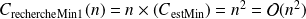
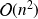

Recherche d'un minimum
Dans cet exercice, il s'agit de d'écrire un programme qui recherche la valeur minimale dans un tableau. Plus précisément, le programme prendra en entrée un tableau T de taille
 , et renverra le couple
, et renverra le couple (T[i], i) avec
tel que T[i] soit minimal (le minimum du tableau, et l'indice pour lequel il est atteint).
On commence par écrire une fonction qui teste si un indice correspond à celui du minimum du tableau.
def estMin(i, T):
res = True
for k in range(len(T)):
if T[k] < T[i]:
res = False
return(res)
Question
Estimer la complexité de la fonction estMin().
Pour cela, préciser la grandeur caractéristique de l'algorithme, les opérations que vous retenez pour le calcul de la complexité, et enfin la relation de récurrence que vous obtenez. Vous pourrez alors en déduire la complexité de l'algorithme : son ordre de grandeur avec les notations de Landau, et son nom.
représente la taille du tableau.
La complexité sera estimée sur le nombre de comparaisons.
La relation de récurrence s'écrit alors
 .
.
La complexité est donc linéaire.
En première approche, voici à présent une fonction de recherche du minimum dans un tableau qui utilise la fonction précédente.
def rechercheMin1(T):
i_mini = 0
for i in range(len(T)):
if estMin(i, T):
i_mini = i
return(T[i_mini], i_mini)
Question
Estimer la complexité de la fonction rechMin1(), avec la même rigueur que pour la fonction estMin().
représente la taille du tableau.
La complexité sera estimée sur le nombre de comparaisons.
La relation de récurrence s'écrit alors  .
La complexité est donc quadratique.
Question
Modifier la fonction précédente en utilisant une boucle while.
Montrer la terminaison et la correction de la fonction obtenue.
def rechercheMin2(T):
i_mini = 0
while not estMin(i_mini, T):
i_mini += 1
return(T[i_mini], i_mini)
Pour la terminaison, len(T) - i_mini est un variant de boucle.
Pour la correction "le minimum n'est pas dans le tableau préfixe T[ : i_mini] à l'entrée de la boucle while" est un invariant de la boucle.
Question
Estimer la complexité de la fonction rechercheMin2() dans le meilleur des cas, dans le pire des cas, et en moyenne.
Il est intéressant d'exprimer la relation de récurrence d'une boucle while avec une variable
qui représente le nombre d'entrées dans la boucle while. Il suffit alors de discuter de la valeur de
pour en déduire les trois complexités demandées.
En utilisant l'indice, la relation de récurrence s'écrit :
.
Au meilleur des cas, le minimum est à l'indice 0. Dans ce cas, la fonction rechercheMin2() appelle une seule fois la fonction estMin() et
. La complexité au meilleur des cas est donc en
, elle est linéaire.
Au pire des cas, le minimum est à l'indice
. Dans ce cas, la fonction rechercheMin2() appelle
fois la fonction estMin() et
. La complexité au meilleur des cas est donc en

, elle est quadratique.
En moyenne, l'espérance du nombre d'appels de la fonction estMin() est
. La complexité en moyenne est donc encore en
, elle est quadratique.
Ces premières fonctions sont là pour pratiquer les éléments du cours, mais soyons sérieux maintenant, les deux fonctions rechercheMin() ne sont pas efficaces.
Question
Proposer une fonction rechercheMin3() qui réponde au cahier des charges de la fonction avec une complexité linéaire.
def rechercheMin3(T):
mini, i_mini = T[0], 0
for i in range(1, len(T)):
if T[i] < mini:
mini = T[i]
i_mini = i
return(mini, i_mini)
Il ne faut pas utiliser la fonction estMin(). Il suffit de mémoriser le minimum temporaire dans une variable.
Conseil :
Utiliser une variable temporaire locale est souvent une astuce qui permet d'abaisser la complexité des algorithmes.